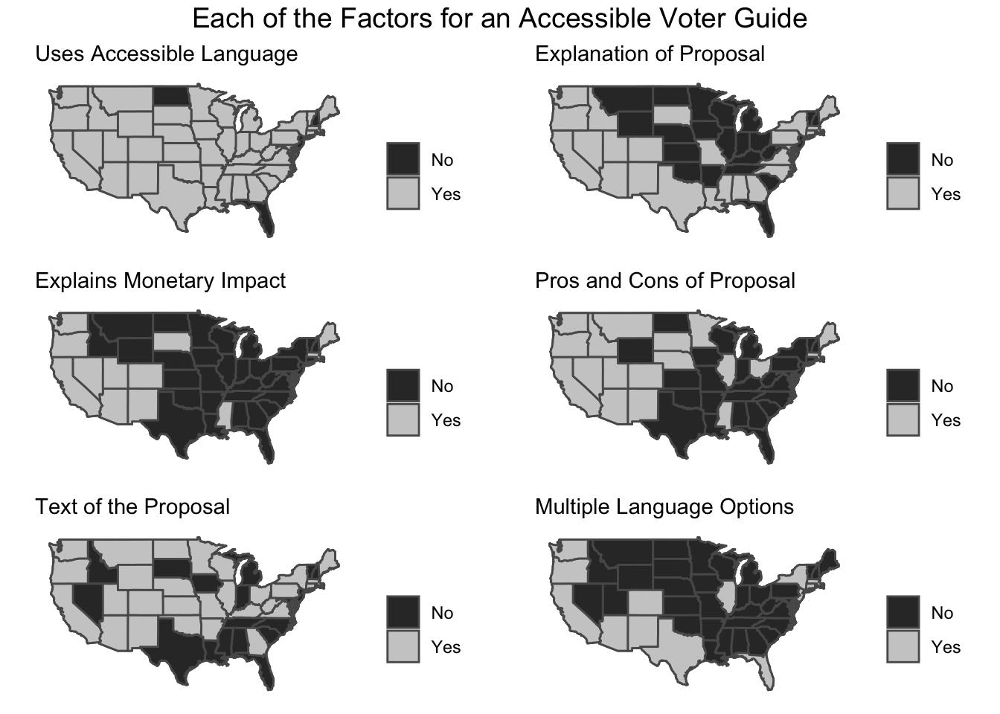
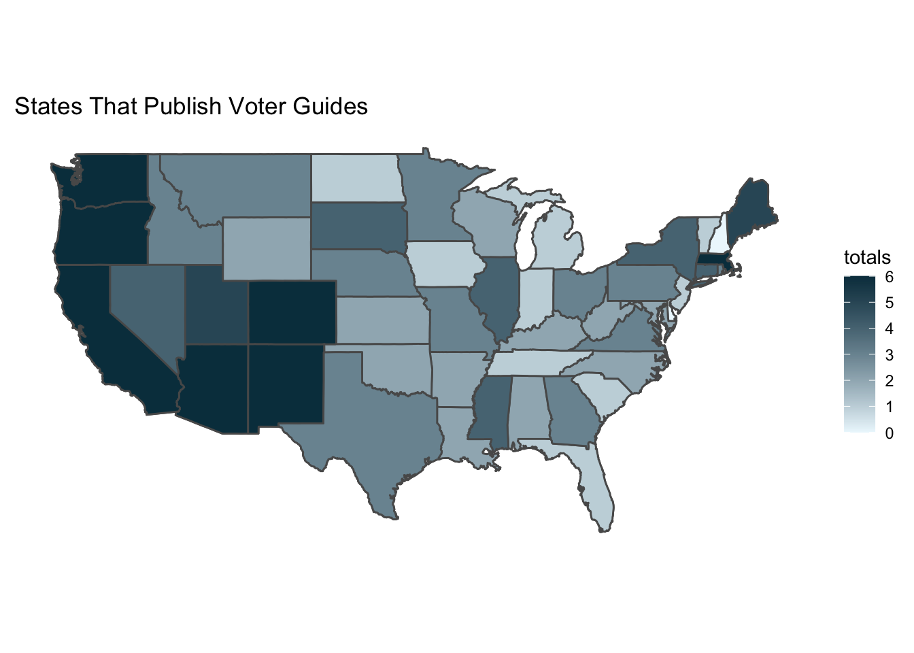

The qualifying feature for an official voter guide is that it must be published by the Secretary of State, but it is also important for the guide to be available in paper and/or electronic format and to contain information specific to voters to use as a guide for ballot measures. Key features of the official voter guide are official ballot language (including the full title and official summary), a neutral analysis of the key points of the proposal, a statement about financial impact for the state, arguments for and against the measure (which can be written by the public, interest groups, or the agency, depending on the state), containing the full text of the measure, and multiple language options.
In 2020, thirty-four states’ ballots had certified ballot measures, but only thirty of these states provided online public access to official state voter guides for voters to review these measures,1 and an even smaller number of states actually mail physical voter guides to registered voters.2 For citizen-led policy making to be successful, it is vital for the citizens to possess as much knowledge as possible to make an informed decision; if one in three people are unable to name their state representative,3 we should have very low expectations for them to have in-depth knowledge, and certainly not enough to make an informed decision, on a policy topic.
32 states provide online voter guides and additional resources to their voters, but fewer states produce physical copies. Overall, 20 states automatically mail voter guides to all registered voters; there are 21 states that do not mail voter guides at all, but 20 of these 21 offer election information via other avenues including state websites, local newspapers, post offices, and/or libraries. The cost of mailing voter guides is between $33,000 to $2 million USD.4
In this visualisation, we have summarised the six factors of a comprehensive and accessible voter guide (official summary of the vote, analysis of the proposal, the full text of the measure with and/or without comments, and multiple language options), and each state has been given a score of 0-6, with raw data from Ballotpedia’s database from 2018-2021, and coded into a visual representation of the distribution.
As you can see from this map, few states came close to providing a comprehensive voter guide that met the 6 factors.5 If a state is constitutionally required to present proposed initiatives for voters’ approval, surely the state would want the voters to be confident in their decision as they cast their ballot so as to increase citizen trust and support in the legislature. To further examine the most common features states offer, and potentially prioritise, our next visual expands and separates each feature to its own map.

Whereas before the map displayed the aggregated score of out 6 for each state’s voter guide, the maps have now been faceted out by these 6 variables to separate out the features. Each feature of a guide is now coded in a binary yes/no in the affirmative of the feature to display which features of voter guides are more prevalent across the states than others. This visual may display the extent that the information being provided in the voter guide is actually useful to empower voters beyond a surface-level familiarity with the topic being voted upon.
